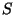

The Full Data Analysis Tool will calculate all the basic descriptive measures for a given data set. The measures included are the mean, variance, standard deviation,median, range, first quartile, third quartile, measure of skewness and number of measurements. A description of each of these is given below. Clicking on any of these objects in the full data analysis output box will bring up the description of that measure.
A full statistical analysis of a one variable data set involves computing from the data set various statistical measures or statistical descriptions. These Statistical Measures are numbers which can be applied to either populations or samples {usually computed for samples} which provide information about the population or sample.
The statistical measures which will be used can either be descriptions of whole populations or descriptions of samples. Descriptions of whole populations are called parameters while descriptions of samples are called statistics.
Generally the statistical analyst is interested in descriptions of whole populations, that is parameters. However it is usually impossible or impractical to observe and measure the whole population. Hence measures of samples, that is statistics are computed. These statistics should be considered as estimators of the parameters. In a numerical framework the whole statistical inference procedure can be described as:
Statistical Inference - using statistics (meaning descriptions of samples) which have been computed on collected data, to obtain conclusions about parameters (meaning descriptions of populations).
From the above discussion it is clear that the study of Statistics is generally broken up into two areas.
DESCRIPTIVE STATISTICS - study of descriptive measures and their interpretations for both samples and populations.
INFERENTIAL STATISTICS - study of the procedures used to go from descriptive statistics on samples to inferences about populations.
In addition to distinguishing between parameters and statistics, the statistical measures that will used can be further classified into two broad categories - measures of location and measures of variation. Measures of location locate positions - for example the center - in the data. For example the average or mean is a measure of location. Measures of variation then give a measure of how the data varies about some measure of location. It must be realized that a statistical analysis is not complete without including both measures of location and measures of variation.
The mean or average is a measure of central tendency for a continuous data set. This
measure can either be computed for a population or for a sample. The sample mean is denoted
 while a population mean is denoted
while a population mean is denoted  . For a given set of data
. For a given set of data
 should be considered as an estimate for the corresponding
should be considered as an estimate for the corresponding  .
.
For a given data set

The mean conveys a great deal of information. First
of all it is a central value. This signifies that the mean will be located towards the
center of the data. As will be seen shortly the mean balances the total value above it and below
it. Secondly it is a clustering value. This indicates that the measurements tend to cluster
about the average. The actual extent of this clustering can be measured in terms of measures of
variation. In line with this idea of clustering we would say that the mean is an expected
value. That is, if a value is picked randomly from a set of data we would expect it to be close
to the mean. This concept is used quite often in the way many everyday occurrences are viewed.
For example if a basketball player averages 24 points per game then the value we would expect this
player to score in his next game would be 24. Finally the mean has the
mathematical significance that the deviations from the mean sum to zero. This is the
technical way of describing that the mean balances the total value above and below it. A
deviation of a measurement from the mean is the difference
 . Thus a
deviation is positive if the measurement is larger than the mean and negative if it is smaller than
the mean. That the sum of these is always zero can be expressed as ;
. Thus a
deviation is positive if the measurement is larger than the mean and negative if it is smaller than
the mean. That the sum of these is always zero can be expressed as ;
EXAMPLE Suppose the sample data consisted of the five measurements 86,81,73,85,80 then the mean would be computed as
The variance and its squareroot the standard deviation are the fundamental measures
of variation for a continuous data set. These measures can either be computed for a
population or for a sample. The sample standard deviation is denoted  while the
population standard deviation is denoted  . and
. and  respectively are the
sample variance and population variance. For a given set of data should be
considered as an estimate for the corresponding
respectively are the
sample variance and population variance. For a given set of data should be
considered as an estimate for the corresponding  .
.
The sample standard deviation is defined by the following formula:

In the formula,
 are the sample data and
are the sample data and
 is the sample mean. The
standard deviation is a type of average of squared deviations from the mean and therefore measures
dispersion about the mean.
is the sample mean. The
standard deviation is a type of average of squared deviations from the mean and therefore measures
dispersion about the mean.
If
 are all the measurements in a population and
are all the measurements in a population and  is the population
mean then the population standard deviation
is the population
mean then the population standard deviation  is
is
Why we divide by  rather than
rather than  can be explained as follows. Generally is used to
estimate
can be explained as follows. Generally is used to
estimate  just as
just as
 is used to estimate the population mean
is used to estimate the population mean  . The fact
that is used to estimate
. The fact
that is used to estimate  is the reason why we divide by
is the reason why we divide by  rather than
rather than  in the
formula. Technically this is to make the sample variance an unbiased estimator for the
population variance, that is so that will average out over all possible samples to the
population variance. Non-technically the reason why we divide by
in the
formula. Technically this is to make the sample variance an unbiased estimator for the
population variance, that is so that will average out over all possible samples to the
population variance. Non-technically the reason why we divide by  can be explained in the
following manner. If the data
consisted of the whole population we would divide by
can be explained in the
following manner. If the data
consisted of the whole population we would divide by
 . Generally, however,there will be more variation in a whole population
than in a sample. If we divide by
. Generally, however,there will be more variation in a whole population
than in a sample. If we divide by  with sample data we will generally underestimate the
population variation. Dividing by
with sample data we will generally underestimate the
population variation. Dividing by  makes the estimate larger, and in fact just large enough
so that it will average out to the population variation.
makes the estimate larger, and in fact just large enough
so that it will average out to the population variation.
The standard deviation measures how closely a set of data clusters about its mean. However it can be used to give even more information. Using the standard deviation we can actually predict what percentages of the total data or population will fall into prescribed intervals about the mean.
There are two results which allow us to do this type of percentage prediction. The first of these is known as Chebyshev's Rule or Chebyshev's Theorem after the Russain mathematician P.Chebyshev who first discovered it. It is a mathematical theorem and therefore is true for any set of data and for any population. The rule is as follows:
 CHEBYSHEV'S RULE:
CHEBYSHEV'S RULE:
If  then at least
of the total data fall within
then at least
of the total data fall within  standard deviations
of the mean.
standard deviations
of the mean.
In the above statement,  is a number and the rule leads to a fraction
. This
fraction indicates a guaranteed fraction of the data which will be found within the interval given
by the mean minus
is a number and the rule leads to a fraction
. This
fraction indicates a guaranteed fraction of the data which will be found within the interval given
by the mean minus  standard deviations to the mean plus
standard deviations to the mean plus  standard deviations. Chebyshev's
Theorem is true for both samples and populations. For
standard deviations. Chebyshev's
Theorem is true for both samples and populations. For  the corresponding fraction is
the corresponding fraction is
 and hence within two standard deviations of the mean there are always at least
and hence within two standard deviations of the mean there are always at least
 of all the data. For the corresponding fraction is
of all the data. For the corresponding fraction is
 and hence
within three standard deviations of the mean there are always at least
and hence
within three standard deviations of the mean there are always at least
 of all the
data. We picture this below.
of all the
data. We picture this below.
EXAMPLE
Suppose a medical study has an average weight of grams with a
process standard deviation of 1.6 grams for certain tissue samples. If  then two standard
deviations would be
grams. Therefore a two standard deviation interval about the
mean would be
grams or equivalently
then two standard
deviations would be
grams. Therefore a two standard deviation interval about the
mean would be
grams or equivalently  grams to
grams to  grams. Using Chebyshev's
rule with
grams. Using Chebyshev's
rule with  it would then be predicted that at least
it would then be predicted that at least
 of all the tissue samples would fall within
this interval. Therefore at least 75% of the tissue samples would be between
of all the tissue samples would fall within
this interval. Therefore at least 75% of the tissue samples would be between  grams and
grams and
 grams. Similarly if then three standard deviations would be
grams. Similarly if then three standard deviations would be
 grams. The corresponding three standard deviation interval about the mean would then be
grams. The corresponding three standard deviation interval about the mean would then be  grams to grams. The corresponding fraction from Chebyshev's rule is
grams to grams. The corresponding fraction from Chebyshev's rule is
 . Therefore
. Therefore
 or 89% of the tissue samples would weigh in the interval
or 89% of the tissue samples would weigh in the interval
 grams to grams. This is pictured graphically below
grams to grams. This is pictured graphically below
Usually, Chebyshev's rule underpredicts the percentage within a given interval. That is the actual percentage is higher than what is predicted by the rule. For example by Chebyshev's rule we would predict that at least 75% of all the data fall within a two standard deviation interval about the mean. In practice, however, for most cases there will be closer to 96% in a two standard deviation interval. Looking at the data below which again comes from the collection of pediatric weights this underprediction shows up very clearly.
EXAMPLE
For the data on pediatric weights given in Example 2.2.1 the mean was computed to be while the sample standard deviation was . The table below lists various intervals about the mean in terms of the sample standard deviation and then a comparison of what would be predicted by Chebyshev's rule (which must be true) together with the actual observed percentage.
 2
2
 115.6-186.8
115.6-186.8
 at least 75%
at least 75%
 98%
98%
 3
3
 97.7-204.6
97.7-204.6
 at least 89%
at least 89%
 100%
100%
 4
4
 79.9-222.4
79.9-222.4
 at least 94%
at least 94%
 100%
100%
A more accurate percentage prediction can be obtained from what is known as the Empirical Rule. This is a rule which has been observed experimentally and is based theoretically on the normal distribution. The drawback to using this rule is that it can only be applied with confidence if there is a "large" number of measurements and these measurements are "fairly" symmetrical. What is meant by "large" is that the predictions based on the empirical rule become more accurate as the number of measurements increases. Thus our confidence in predictions made using the empirical rule increases with the number of observed measurements. The empirical rule is as follows:
 EMPIRICAL RULE:
EMPIRICAL RULE:
In a "large" set of fairly symmetrical measurements approximately 68% fall within one standard deviation of the mean, 96% fall within two standard deviations of the mean and over 99% fall within three.
If the data is completely symmetrical we obtain a finer percentage breakdown as pictured below:
EXAMPLE
In the previous exmaplethere was a tissue sample average weight of
grams with a standard deviation of  grams. A predicted statistical breakdown of tissue
sample weights based on the empirical rule would be given as below.
grams. A predicted statistical breakdown of tissue
sample weights based on the empirical rule would be given as below.

That is 34% of all the tissue sample should weigh between grams and grams, 14%
between grams and  grams and so on. In using the empirical rule in this case we
would have to assume that tissue sample weight is symmetrical. This is usually the case with most
biological data.
grams and so on. In using the empirical rule in this case we
would have to assume that tissue sample weight is symmetrical. This is usually the case with most
biological data.
From the empirical rule we have that 96% of a set of measurements fall within two standard
deviations of the mean while 99% will fall within three. Therefore in the first case 96% of the
data will fall within a range of four standard deviations (two on either side of the mean) while
in the second 99% will fall within a range of six standard deviations (three on either side of the
mean). It follows that for most large sets of data the range  of this data will be between
of this data will be between  and
and  times the magnitude of the standard deviation. This relationship can be used to give a
rough estimate of the standard deviation. would be estimated as being between
and
where
times the magnitude of the standard deviation. This relationship can be used to give a
rough estimate of the standard deviation. would be estimated as being between
and
where  is the range.
is the range.
for most large data sets
EXAMPLE
A sample of  ball bearings had a range of
ball bearings had a range of  cm in measuring the diameter. Estimate the
standard deviation.
cm in measuring the diameter. Estimate the
standard deviation.
From the discussion above would be estimated to be between
 and
.
and
.
The simplest measure of variation for a one variable data set is the range. This is denoted
by  for both a population and a sample. The range is defined as the difference between the
largest value in a set of data and the smallest value. That is ;
for both a population and a sample. The range is defined as the difference between the
largest value in a set of data and the smallest value. That is ;
Suppose that in a sample of pediatric weights the largest weight was 188 and the smallest weight was 111. It follows that the range was R = (188 - 111) = 77.
Clearly the larger the range the more dispersed the data is. However the range does not provide a great deal of information and therefore a more powerful and useful measure is used.
The most commonly used measure of variation and the one from which the most information can be obtained is the standard deviation (see standard deviation).
Based on the empirical rule ( and the normal distribution) it occurs that for most large samples the
sample range  is between four and six times the magnitude of the standard deviation (see
standard deviaiton). That is for a large sample most of the time we would have
is between four and six times the magnitude of the standard deviation (see
standard deviaiton). That is for a large sample most of the time we would have
This gives a convenient method for determining a rough estimate of the size of for a large sample. We illustrate this from a collection of pediatric weights.
EXAMPLE
Consider the 60 pediatric weights which have a range of  . The
standard deviation would then be estimated as being between
. The
standard deviation would then be estimated as being between
 and
and
 .
.
The median is another measure of central tendency for a continuous data set. This
measure can either be computed for a population or for a sample. The sample median is denoted
 while a population median is denoted . For a given set of data
while a population median is denoted . For a given set of data
 should be considered as an estimate for the corresponding .
should be considered as an estimate for the corresponding .
The median of a set of data is the value so that 50% of the measurements are less than or equal to it. Thus the median can be interpreted as the exact middle value. To compute the median, the data must first be arranged in ascending order. After this is done the middle value is located. There are two differing situations in locating the median for samples - if there are an odd number of measurements or an even number of measurements. In the former case the median is chosen as the exact middle value while in the latter case the median is taken as the average of the two middle most values. We illustrate this distinction in the next two examples.
EXAMPLE
Consider the data 86,73,81,85,80 and let us compute the median.
We first arrange the data in ascending order73, 80, 81, 85, 86
Here there are an odd number of measurements and therefore an exact middle value which is 81.
Thus here the median is 81. This is a sample median so here
 .
.
EXAMPLE
Consider the data 86,73,81,85,80, 82 and let us compute the median.
In ascending order we have
73, 80, 81, 82, 85, 86
Here there are an even number of measurements and therefore no exact middle value. Thus here the median is computed as the average of the two middle values which are 81 and 82. Then
If there are an odd number of measurements, say n of them, then there is an exact middle value.
If the data is arranged in ascending order this exact middle value is located in the
 position. In the first example there were 5 measurements so the position of the
median was the (5+1 /2) = 3 rd measurement. If there had been 75 measurements the median would
have been located in the 38 th position. If there are an even number of measurements the median
is the average of the two middle values. If n is even these are the values in the
nd
and
position. In the first example there were 5 measurements so the position of the
median was the (5+1 /2) = 3 rd measurement. If there had been 75 measurements the median would
have been located in the 38 th position. If there are an even number of measurements the median
is the average of the two middle values. If n is even these are the values in the
nd
and
 st positions. In the second example there were 6 measurements so the median
was the average of the third and fourth. If there were 80 measurements the median would be the
average of the 40 th and 41 st after arranging in order.
st positions. In the second example there were 6 measurements so the median
was the average of the third and fourth. If there were 80 measurements the median would be the
average of the 40 th and 41 st after arranging in order.
The median has much the same significance as the mean - a central clustering value. It is not as heavily affected by extreme values as the mean but it can be shown that it is not as "reliable" either. That is there is in general more variation in medians of samples drawn from a large population than in means of samples drawn from the same population - assuming the same sample sizes are used. For this reason most statistical analyses will use the mean as the primary measure of central tendency. The median is used when there are extreme outliers.
The relationship between the mean and the median is governed by the symmetry of the data (see measures of skewness). An important characteristic of a population is its symmetry or lack of symmetry . A lack of symmetry is called skew. Many inferential statistical procedures depend on the data being fairly symmetrical and therefore the presence of skew becomes an important concept. The relationship betwen the mean and median can be used to describe these concepts.
If the population (or data) is symmetrical or balanced there is no skew. In this case the mean
and median are approximately equal. Data which has a longer tail to the right hand side is called
skewed right or positively skewed. Personal incomes would generally be skewed right. Most of a
population would tend to have personal incomes towards the lower end of the scale, however there
would be a significant long tail towards the upper end . In this situation the mean will exceed
the median - that is  . Lifetimes, of either produced items or living things, tend also
to be skewed right. This is not obvious but can be shown to hold. In general the mean lifetime of
an item will exceed the median lifetime. The median lifetime would be the time when 50% of the
items have failed or died. The final case is where there is a longer tail to the left hand side, that is skewed left
or negatively skewed. College grades, in most cases, are somewhat skewed left. In this case
the median exceeds the mean -
. Lifetimes, of either produced items or living things, tend also
to be skewed right. This is not obvious but can be shown to hold. In general the mean lifetime of
an item will exceed the median lifetime. The median lifetime would be the time when 50% of the
items have failed or died. The final case is where there is a longer tail to the left hand side, that is skewed left
or negatively skewed. College grades, in most cases, are somewhat skewed left. In this case
the median exceeds the mean -  .
.
The median is also a special case of a fractile (see first or third quartiles) which are
measures which divide the data into fractional pieces. In the case of the median this fraction
is
 .
.
The mean and the median are measures of central tendency. That is they located, in one way or another, the center of the data. Often it is desired to locate other positions as well. A class of measures which accomplishes this are the fractiles or quantiles. These are measures which divide the total data into fractional sections. The simplest quantile is the median which divides the data in half. That is the median is the measurement which is located so that 50% of the data is less than or equal to it.
If the data is divided into four parts we get the quartiles. There are three quartiles
usually denoted
 . The first quartile
. The first quartile  is defined as that measurement located
so that 25% of the data is less than or equal to it. The second quartile is the same as
the median. The third quartile
is defined as that measurement located
so that 25% of the data is less than or equal to it. The second quartile is the same as
the median. The third quartile  is the measurement located so that 75% of the data is less
than or equal to it.
is the measurement located so that 75% of the data is less
than or equal to it.
EXAMPLE
A demographic survey in a certain state indicates the the first and third quartiles in height for adult women are 62 inches and 67 inches respectively. This indicates that 25% of the adult women in this state are 62 inches or less while 75% are 67 inches or less.
The median used the 50% point to define it while the quartiles used 25% pieces, but any fraction
or percent could be used to define a fractile. Two common fractiles that are employed are the
deciles which divide the data into 10% chunks and the percentiles which divide the
data into 1% pieces. In the former case there are nine deciles
. For
example, would be the measurement located so that 60% of the data lies less than or equal
to it. The others would be defined analagously. would coincide with the median. For the
percentiles there are 99 such measurements denoted
 . The 86th percentile,
. The 86th percentile,  would be located so that 86% of the data is less than or equal to it. It should be noted that
would be located so that 86% of the data is less than or equal to it. It should be noted that
 is the same as the first quartile and
is the same as the first quartile and  is the same as the third quartile.
is the same as the third quartile.
EXAMPLE
In the same study cited in the previous example it was found that the 95th percentile in height was 70 inches. This would indicate that 95% of the adult women were 70 inches or less. Equivalently only 5% were above this height.
An important characteristic of a population is its symmetry or lack of symmetry . Lack of symmetry is called skew. Many inferential statistical procedures depend on the data being fairly symmetrical and therefore the presence of skew becomes an important concept. The relationship betwen the mean and median can be used to describe these concepts.
If the population (or data) is symmetrical or balanced there is no skew. In this case the mean and median are approximately equal. We picture a symmetrical population with the relation between the mean and the median in figure 1.
Data which has a longer tail to the right hand side is skewed right or
positively skewed. Personal incomes would generally be skewed right. Most of a population
would tend to have personal incomes towards the lower end of the scale, however there would be a
significant long tail towards the upper end . In this situation the mean will exceed the median -
that is  . Lifetimes, of either produced items or living things, tend also to be skewed
right. This is not obvious but can be shown to hold. In general the mean lifetime of an item will
exceed the median lifetime. The median lifetime would be the time when 50% of the items have
failed or died. A skewed right population with the relation
between the mean and the median is pictured in figure 2.
. Lifetimes, of either produced items or living things, tend also to be skewed
right. This is not obvious but can be shown to hold. In general the mean lifetime of an item will
exceed the median lifetime. The median lifetime would be the time when 50% of the items have
failed or died. A skewed right population with the relation
between the mean and the median is pictured in figure 2.
The final case is where there is a longer tail to the left hand side. This is called skewed
left or negatively skewed. College grades, in most cases, are somewhat skewed left. In
this case the median exceeds the mean -  . We picture a skewed left population in figure
3.
. We picture a skewed left population in figure
3.
The measure of skewness that is used is....
The sample size of a one variable data set is simply the number of measurements in that data
set. Many statistical procedures differ depending on whether there is a large sample or a
small sample. The central limit theorem which is a cornerstone of both applied
statistics and theoretical statistics says that many if not most populations can be approximated
for large sample size by a normal distribution. Hence if the sample is large enough the
normal distribution approximation can be used. Large enough here means just that the results
gets better as the sample size gets larger. In practice  is taken as the cutoff between
large and small samples. Thus a sample with
is taken as the cutoff between
large and small samples. Thus a sample with  can be consiidered a large sample and the
normal approximation used while if it is a small sample and different procedures (
depending on the population itself) must be used.
can be consiidered a large sample and the
normal approximation used while if it is a small sample and different procedures (
depending on the population itself) must be used.